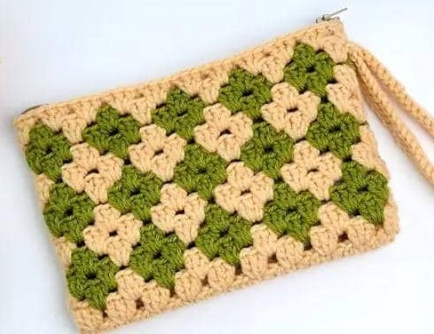

The Genesis
AFC Bournemouth was originally formed in 1899 as Boscombe St. John's Institute FC in the Boscombe area of Bournemouth, Dorset, England.

Take a journey with us through our legendary unforgettable eras
AFC Bournemouth was originally formed in 1899 as Boscombe St. John's Institute FC in the Boscombe area of Bournemouth, Dorset, England.
The club played in local and regional leagues before joining the Southern League in 1920.
In 1923, the club was elected into the Football League and renamed Bournemouth & Boscombe Athletic
Bournemouth spent much of its early Football League history in the Third Division South, winning the Third Division South Cup in 1946
The club experienced fluctuating fortunes, including relegation to the Fourth Division in 1975, followed by promotions in 1981–82 and winning the Associate Members' Cup in 1984.
The pinnacle of their pre-Premier League success came with the Third Division title in 1986–87, which led to three seasons in the second tier
Financial difficulties marked the late 1990s and early 2000s, with the club entering administration in 1997 and suffering relegation to the fourth tier in 2002.
A transformative period began with the appointment of Eddie Howe as manager in 2008. Under his leadership, Bournemouth achieved three promotions in six years, culminating in their historic entry into the Premier League in 2015.